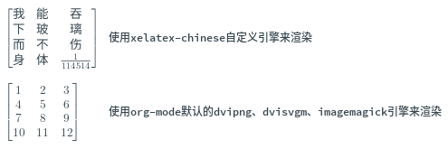

Table of Contents
1. 在org-mode里渲染含有utf8的公式块
1.1. 特别感谢
- chatGPT 4o(以下方法全部通过gpt 4o来一步一步调试得到的实现，AI是真的牛逼👍)
1.2. 大致效果

1.3. 实现方法
首先我们先通过elisp定义一个基本的自定义引擎
;; ========================================
;; 使用 xelatex 渲染 latex-fragment
;; ========================================
(add-to-list 'org-preview-latex-process-alist
'(xelatex-chinese
:programs ("xelatex" "convert")
:description "XeLaTeX with Chinese support dvi > png"
:message "you need to install the programs: xelatex and divpng."
:image-input-type "pdf"
:image-output-type "png"
:image-size-adjust (1.7 . 1.5)
:latex-header "\\documentclass[11pt]{standalone}
\\usepackage{fontspec}
\\setmainfont{Source Han Sans CN}
\\setsansfont{Source Han Sans CN}
\\usepackage[usenames]{color}
\\usepackage{amsmath}
\\pagestyle{empty}"
:latex-compiler ("xelatex -interaction nonstopmode -output-directory %o %f")
:image-converter ("convert -density 90 %f %O")))
自定义引擎方案
| 序号 | 说明 | 解释 |
|---|---|---|
| 1 | 引擎 | xelatex |
| 2 | 方案 | dvi 转 png |
| 3 | 字体大小 | 9pt |
| 4 | 字体 | Source Han Sans CN(思源黑体) |
| 5 | 添加了的eusepackage | fontspec、usenames、amsmath |
然后我们再通过elisp来在对每次将要渲染的公式块，手动选择渲染引擎
大意就是
- 如果我们渲染 无utf-8字符 的公式块，那么我们就选择org-mode默认的dvipng、dvisvgm、imagemagick引擎来渲染
- 如果我们渲染 有utf-8字符 的公式块，那么我们就选择我们自己定义的xelatex-chinese引擎来渲染
;; =======================================
;; 动态选择引擎来渲染
;; from chatGPT 4o
;; =======================================
(defun custom-org-latex-preview-with-utf8 ()
"在org-mode下渲染含有utf-8字符的latex-fragment"
(interactive)
(let* ((latex-code (thing-at-point 'line t))
(is-utf8 (and latex-code
(string-match "\\[.*\\]" latex-code)
(string-match-p "[^\x00-\x7F]" latex-code))))
(if is-utf8
;; 如果包含 UTF-8 字符，就使用 xelatex-chinese 引擎
(progn
(setq org-preview-latex-default-process 'xelatex-chinese)
(message "目前使用了xelatex-chinese引擎渲染此latex-fragment"))
;; 如果不包含 UTF-8 字符，就使用 dvipng、dvisvgm、imagemagick 引擎
(setq org-preview-latex-default-process 'dvipng)
(message "目前使用了org-mode默认的dvipng、dvisvgm、imagemagick引擎渲染此latex-fragment"))
(org-latex-preview)
;; 每次执行完毕后都恢复为 dvipng、dvisvgm、imagemagick 引擎
(setq org-preview-latex-default-process 'dvipng)
(message "Creating Latex previews in section...(and recover dvipng...) done.")))
然后我们再设置快捷键就可以了 每次渲染此latex-fragment之前，手动选择渲染引擎了
;; ================================================================== ;; 这仅仅只是我自己风格的快捷键.....您也可以自己设置您自己的风格..... ;; ================================================================== (define-key org-mode-map (kbd "C-z C-z C-l") 'custom-org-latex-preview-with-utf8) ; 用 C-c C-x C-p 进行utf-8的 \[\] 上下文范围的公式渲染
1.4. 个人遇到的排版问题
我自己在org-mode里尝试过了，这些是我个人在org-mode下遇到的排版问题
- 如果在中文字符后紧跟数学分数，那么就会 在我自己当前的环境下 出现比如 “中文 1 \frac{}{2}” 这种真分数的预览效果（抱歉此问题的解决方法是，对于复杂的equation需要使用对排版格式更友好的 "\left( content \right)"、"\left[ content \right]"）
- 对于数学中的一些对称字符，可能会渲染失败，比如如果只写了数学的对称符号的其中一边却没有闭合上，就会出现错误导致渲染不了，比如 \begin{Bmatrix} \begin{bmatrix} 都会造成渲染失败。解决方法是 “闭合上” 就行了
- 对于一些字符，也有可能会渲染失败…
听说是字体的原因，gpt 4o推荐说使用XITS字体或Modern Latin字体可能可以缓解，但也许这应该是我自己的设置问题与环境问题吧，我使用的字体是 Source Han Sans CN(思源黑体) 来显示，可能确实是有可能是这方面的问题，不过有机会再去调试…..目前也足够我个人使用了。
1.5. 这里附带一些光标跳转的辅助函数
详细更多可以移步到 kitevnn/dotfiles-archlinux 来获得更多的帮助..
;; =======================================
;; 在org-mode的公式上下文的光标跳转
;; from chatGPT 4o
;; =======================================
(defun custom-jump-the-beginning-of-the-equation ()
"当光标在公式块\[ \]时，跳转到此公式块的\["
(interactive)
(let ((thing (thing-at-point 'line t)))
(if (and thing (string-match "\\[.*\\]" thing))
(search-backward "\\[" nil t)
(message "no such equation, please check again..."))))
(defun custom-jump-the-ending-of-the-equation ()
"当光标在公式块\[ \]时，跳转到此公式块的\]"
(interactive)
(let ((thing (thing-at-point 'line t)))
(if (and thing (string-match "\\[.*\\]" thing))
(search-forward "\\]" nil t)
(message "no such equation, please check again..."))))
(defun custom-inside-escaped-bracket-pair-p ()
"判断公式块\[ \]的谓词"
(let ((thing (thing-at-point 'line t)))
(and thing
(string-match-p "\\[.*\\]" thing))))
(defun custom-jump-the-previous-equation-formatting ()
"光标跳转到上一个公式块前的格式化"
(interactive)
(if (custom-inside-escaped-bracket-pair-p)
(search-backward "\\[" nil t)))
(defun custom-jump-the-next-equation-formatting ()
"光标跳转到下一个公式块前的格式化"
(interactive)
(if (custom-inside-escaped-bracket-pair-p)
(search-forward "\\]" nil t)))
(defun custom-jump-the-previous-equation ()
"当光标在公式块\[ \]时，跳转到此上一个公式块的\[ \]"
(interactive)
(custom-jump-the-previous-equation-formatting)
(if (custom-inside-escaped-bracket-pair-p)
(progn
(forward-char 2)
(search-backward "\\[" nil t))
(message "no previous equation, please check again...")))
(defun custom-jump-the-next-equation ()
"当光标在公式块\[ \]时，跳转到此下一个公式块的\[ \]"
(interactive)
(custom-jump-the-next-equation-formatting)
(if (custom-inside-escaped-bracket-pair-p)
(progn
(backward-char 2)
(search-forward "\\]" nil t))
(message "no next equation, please check again...")))
;; ==================================================================
;; 这仅仅只是我自己风格的快捷键.....您也可以自己设置您自己的风格.....
;; ==================================================================
(define-key org-mode-map (kbd "C-z C-x C-f") 'custom-jump-the-ending-of-the-equation) ; 当光标在\[\]上下文时，光标跳转到\[\]的\[
(define-key org-mode-map (kbd "C-z C-x C-b") 'custom-jump-the-beginning-of-the-equation) ; 当光标在\[\]上下文时，光标跳转到\[\]的\]
(define-key org-mode-map (kbd "C-z C-x C-n") 'custom-jump-the-next-equation) ; 当光标在\[\]上下文时，光标跳转到下一个\[\]
(define-key org-mode-map (kbd "C-z C-x C-p") 'custom-jump-the-previous-equation) ; 当光标在\[\]上下文时，光标跳转到上一个\[\]